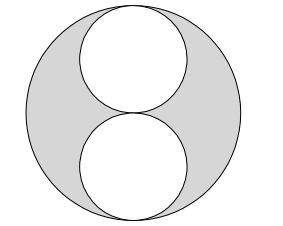
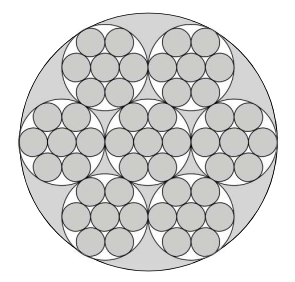

« Aufgabe 5.2
Aufgabe 5.3 - Flächen schätzen
Aufgabe 5.4 »
Schätzen Sie bei diesen Figuren den Anteil der grauen Fläche an der Gesamtfläche.
(Quelle: Affolter et al. 2003, S. 99)

Lösung anzeigen
Individuelle Schätzung.
Vergleichen Sie Ihre Schätzung mit der Berechnung in Aufgabe 5.4.

Lösung anzeigen
Individuelle Schätzung.
Vergleichen Sie Ihre Schätzung mit der Berechnung in Aufgabe 5.4.